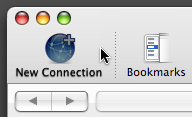
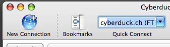
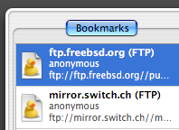
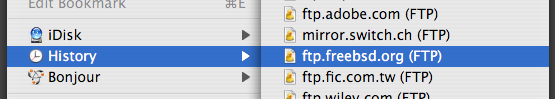
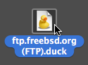
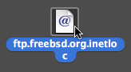
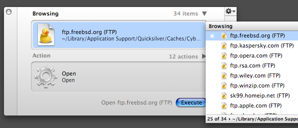

-
ツールバーボタン。
‘新規接続’ツールバーボタンをクリックするか、または‘ファイル’→‘新規接続’を選択してください。新規ブラウザウインドウにて接続を開始する場合は、まず‘ファイル’→‘新規ブラウザ’を選択してください。
 -
クイック接続。
ツールバーの‘クイック接続’欄に、サーバの名前を直接入力してください。入力内容はブックマークを参照して自動補完されます。
user@host、user@example.net、またはftp://mirror.switch.ch/mirror/などの形式で入力してください。 -
ブックマークから。
‘表示’→‘ブックマークを表示／隠す’を選択し、ブックマークをダブルクリックしてください。また、‘ブックマーク’メニューからもブックマークを選択できます。
 -
履歴から。
メニューの‘ブックマーク’→‘履歴’からブックマークを選択してください。
 -
Bonjour で見つかったサービスから。
ローカルネットワーク上のサーバはメニューの‘ブックマーク’→‘Bonjour’に表示されます。
-
Finder から。
Finder 上で Cyberduck ブックマークファイルをダブルクリックしてください。
Finder 上でインターネットロケーションファイルをダブルクリックしてください。
 -
Quicksilver を使う。
